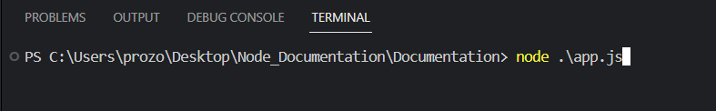
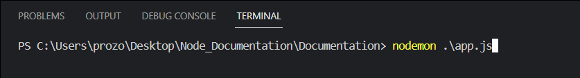
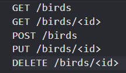
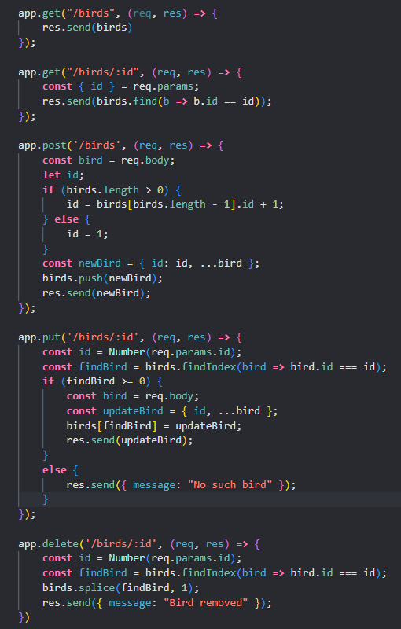

As an asynchronous event-driven JavaScript runtime, Node.js is designed to build scalable network applications. Node.js takes the event model a bit further. It presents an event loop as a runtime construct instead of as a library. It simply enters the event loop after executing the input script and exits the event loop when there are no more callbacks to perform.
 Nodemon is a tool that helps develop Node.js based applications by automatically restarting the node application when file changes in the directory are detected.
In Javascript, there are five basic, or primitive, types of data. The five most basic types of data are strings, numbers, booleans, undefined, and null. Two other common data types are objects and arrays. An object or array are collections, a way to group together multiple points of data into a single bundle that we can pass around using access.
REST API design
REST API implementation

1. Readability: Clean code and following conventions make it easier for other developers to read and understand your code.
2. Maintainability: Code that follows conventions is easier to maintain because it is structured in a predictable way.
This makes it easier to modify or add new functionality or debug.
3. Collaboration: Following code conventions promotes consistency and helps developers work together more effectively.